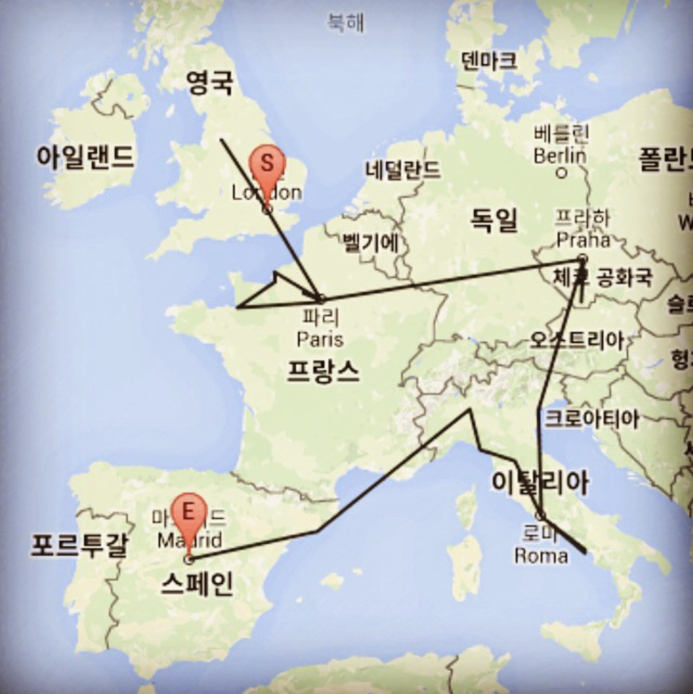
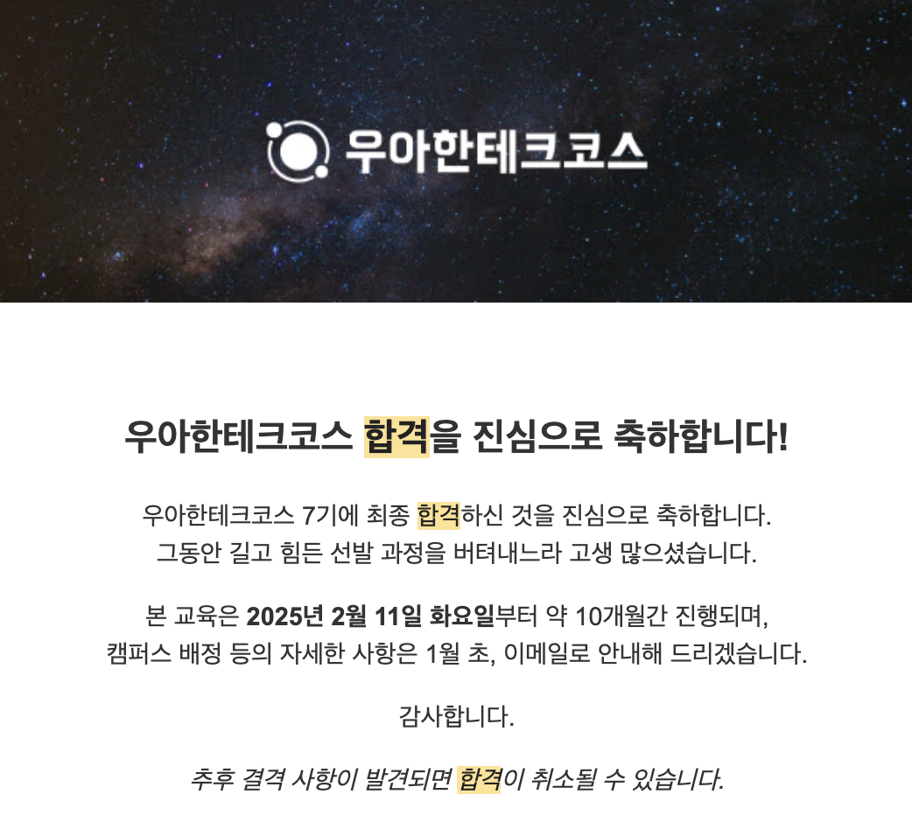

기억에 남는 순간들





안녕하세요, 저는 새로운 경험과 도전을 두려워하지 않는 아이나에요. 낯선 곳에서의 설렘을 즐기며 자유로운 탐험을 좋아하고, 때론 두려움이 앞서도 한계를 뛰어넘는 짜릿함을 느끼죠. 현실에 안주하기보다는 꿈과 이상을 향해 나아가며, 실패를 두려워하지 않고 나만의 길을 개척하기 위해 노력하고 있어요. 늘 변화를 추구하며 더 큰 세상을 향해 도전하는 것이 저의 삶의 방식입니다.

뮤지컬 「맨 오브 라만차」는 소설 돈키호테의 작가 세르반테스가 종교재판을 기다리는 감옥에서 죄수들을 대상으로 자신의 소설을 극으로 재현하는 극중극 형식의 뮤지컬이다. 라만차에 살고있는 늙은 신사 알론조 키하나는 고전인 기사 이야기를 너무나 많이 읽은 탓에 자신이 돈키호테라는 기사라고 착각하고 시종 산초를 대동하고 모험을 찾아 떠난다. 그러나 그가 만난 것은 용이나 거인이 아닌 평범하기 짝이 없는 사람들. 여관을 성이랍시고 찾아들어간 그는 평범한 여인 알돈자를 숭고한 사랑의 대상인 둘시네아로 이상화한다. 극은 현실과 이상의 갈등 속에서도 "이룰 수 없는 꿈을 꾸는 것"의 가치를 강조하며, 절망 속에서도 희망을 잃지 않는 메시지를 전한다. “미쳐 돌아가는 이 세상에서 가장 미친 짓은 현실에 안주하고 꿈과 이상을 포기하는 것이라오!”라는 대사는 내 마음을 강하게 흔들었다. 현실의 벽에 부딪혀 이상을 포기하는 것이 당연하게 여겨지는 시대에 돈키호테의 말은 큰 깨달음을 주었다. 그는 비웃음과 멸시 속에서도 이상을 좇는 것이야말로 진정한 용기임을 보여주었다. 또한 “이기고 지는 것은 중요하지 않소. 오직 나에게 주어진 길을 따를 뿐”이라는 대사는 결과에 연연하지 않고 자신의 신념을 끝까지 지켜내는 돈키호테의 모습을 상징한다. 그는 현실의 냉혹함에 굴복하지 않고 자신만의 길을 묵묵히 걸어간다. 그 모습은 단지 허황된 이상주의자가 아닌, 절망 속에서도 희망을 놓지 않는 진정한 인간의 의지를 보여준다. 「맨 오브 라만차」는 단순히 돈키호테의 모험담이 아니라, 꿈을 잃은 현대인들에게 이상을 좇는 것이 미련한 일이 아님을 일깨우는 작품이다. 이 작품을 보며 나 역시 현실에 안주하지 않고 나만의 이상을 향해 나아가야겠다고 다짐하게 되었다. 세상의 비웃음에도 흔들리지 않고 자신의 신념을 지키는 용기를 배우고 실천해야겠다 다짐했다.

디오의 괜찮아 괜찮아도는 삶의 다양한 순간들을 따뜻하고 담담하게 그려내며 깊은 위로를 전해주는 곡이다. 이 노래는 기쁨과 슬픔, 설렘과 무뎌짐 등 우리가 일상에서 겪는 수많은 감정들을 솔직하게 표현한다. 특히 “때론 울고, 때론 웃고, 마음이 가는 대로 있는 그대로”라는 가사는 감정의 자연스러운 흐름을 받아들이며 자신의 모습을 숨기지 않아도 된다는 메시지를 전한다. 이를 통해 나는 완벽해야 한다는 압박에서 벗어나 스스로를 있는 그대로 받아들이는 법을 배웠다. 또한 “수많은 별이 그랬듯이 언제나 같은 자리에서 제 몫의 빛으로 환하게 비출 테니”라는 가사는 흔들리는 나에게 큰 위로가 되었다. 마치 변함없이 빛나는 별처럼 나도 나만의 자리에서 나다운 모습으로 살아가면 된다는 느낌을 받았다. 이 노래는 완벽하지 않아도, 때론 흔들리고 방황해도 괜찮다고 말해주며 마음 깊은 곳의 불안을 따뜻하게 감싸준다. 무엇보다 “흐르듯 살아도 그냥 괜찮아 괜찮아도”라는 마지막 구절은 항상 모든 순간에 최선을 다하려 애쓰다 지쳤던 나에게 새로운 깨달음을 주었다. 살면서 문득 내가 너무 애쓰고 있나? 느껴지는 순간에 나를 다시 돌아볼 수 있게 해주는 노래이다. 괜찮아 괜찮아도는 듣는 상황에 따라 다른 느낌으로 다가오는 곡이다. 기쁠 때는 행복을 더욱 빛나게 하고, 슬플 때는 따뜻한 위로가 되며, 혼란스러울 때는 스스로를 돌아보게 한다. 듣는 이마다 각자의 상황에 따라 다양한 해석이 가능하지만, 그 모든 해석 속에 ‘괜찮다’는 따뜻한 위로가 공통적으로 깔려 있다. 단순한 위로를 넘어 삶의 본질을 담담하게 받아들이게 해주는 이 곡을 들으며 나는 완벽하지 않아도, 흔들려도 괜찮다는 사실을 배웠고, 그 덕분에 조금 더 나답게 살아갈 용기를 얻었다.